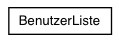
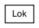

Main Page
Classes
Class List
Class Hierarchy
Class Members
ESE Märklin Projekt Graphical Class Hierarchy
Go to the textual class hierarchy


Generated on Tue Jun 20 12:59:10 2006 for ESE Märklin Projekt by
1.4.6
 1.4.6
1.4.6